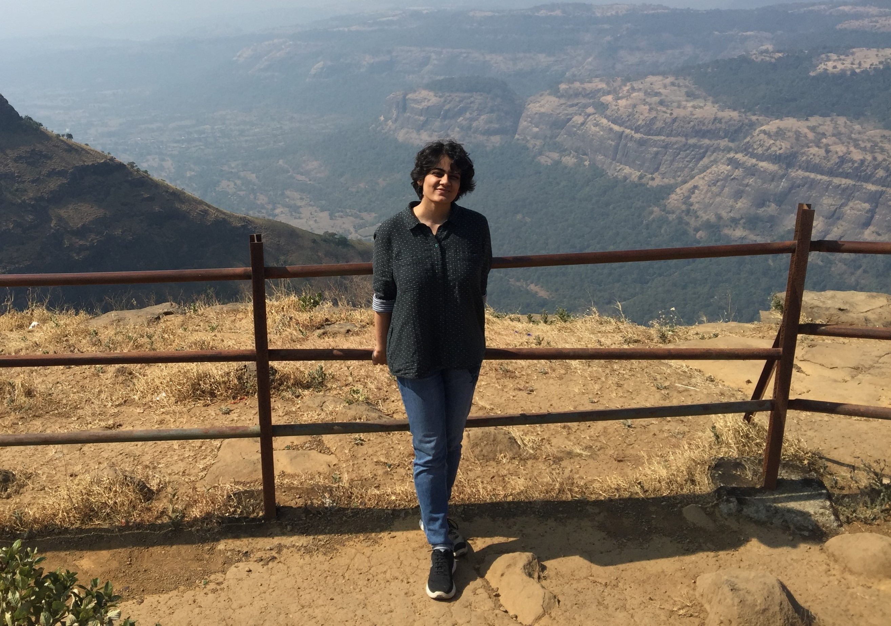

Hi, I am Richa
An aspiring researcher in Neuroscience
About me

I am a graduate student in the Department of Physics at the Indian Institute of Technology-Bombay. My graduate thesis focuses on exploring and characterizing the effects of external stimulation on Human Brainwaves recorded using Electroencephalography (EEG). I rely on both dynamical systems theory and statistical physics tools to understand the subtle nuances of my experimental observations. Along with this, I have also worked with small world networks and studied various non-linear dynamical phenomena such as stochastic resonance and oscillation quenching.
Outside work, I am an amateur equestrian still struggling with the gallop.
Education
Graduate Student
CPI (out of 10) -- 9.78Indian Institute of Techonology - Bombay
Master of Science
CPI (out of 10) -- 8.00Indian Institute of Techonology - Bombay
Bachelor of Science (Honours, Physics)
Percentage -- 89.78 %Miranda House, University of Delhi
Publications
Related to graduate thesis work
1) Richa Phogat, P Parmananda, Provoking predetermined aperiodic patterns in human brainwaves, Chaos: An Interdisciplinary Journal of Nonlinear Science, 28 (12), 121105 (2018)
2) Richa Phogat, Sudeshna Sinha, and P. Parmananda, Echo in complex networks, Physical Review E, 101 (2), 022216 (2020)
3) Richa Phogat, P. Parmananda, and Ashok Prasad, Intensity dependence of sub-harmonics in cortical response to photic stimulation, (Manuscript under review)
4)Effect of beta entrainment on parallel distributed information processing of the brain, (Manuscript Under Preparation)
Collaborative Projects
5) Ishant Tiwari*, Richa Phogat*, Animesh Biswas*, P. Parmananda, and Sudeshna Sinha, Quenching of oscillations in a liquid metal via attenuated coupling, Physical Review E, 105 (3), L032201 (2022), (* Equal Contribution)
6) Richa Phogat*, Arnob Ray*, P. Parmananda, and Dibakar Ghosh, Phase coalescence in a population of heterogeneous Kuramoto oscillators, Chaos: An Interdisciplinary Journal of Nonlinear Science, 31 (4), 041104 (2021), (* Equal Contribution)
7) Richa Phogat, Ishant Tiwari, Pawan Kumar, Marco Rivera, and P. Parmananda, Cessation of oscillations in a chemo-mechanical oscillator, The European Physical Journal B, 91 (6), 1-7 (2018)
8) Ishant Tiwari, Darshil Dave, Richa Phogat, Neev Khera, and P. Parmananda, An alternate protocol to achieve stochastic and deterministic resonances, Chaos: An Interdisciplinary Journal of Nonlinear Science, 27 (10), 103112 (2017)
9) Ishant Tiwari, Richa Phogat, P. Parmananda, J. L. Ocampo-Espindola, and M. Rivera, Intrinsic periodic and aperiodic stochastic resonance in an electrochemical cell, Physical Review E, 94 (2), 022210 (2016)
Technical Skills
Numerical Modelling
(i) Bifurcation analysis of a physiologically inspired Jansen and Rit (J and R) Neuronal Mass Model (NMM) to analyze in greater detail the experimental results reported in publication # 3.
(ii) Increasing randomness in both static and dynamic networks using ``Watts-Strogatz" algorithm. (Related to publication # 2).
Statistical Analysis
Eigenvalue analysis of the coupled Hindmarsh-Rose (HR) model of neuronal activity (Publication # 5), Entropy Calculations, Principal Component Analysis (PCA), Hypothesis Testing.
EEG Data Acquisition and Analysis
(i) Recording the human brainwaves using a 32 electrode EEG machine (Publications # 1, # 3 and #4).
(ii) Extensively use MATLAB to analyze and explore various statistical properties of this recorded EEG data (Publications # 1, # 3 and #4).
EEGLAB
Experience with EEGLAB toolbox of MATLAB for removing EEG artifacts, Independent Component Analysis (ICA) and for microstate analysis (Publications # 1 and # 3).
Video Analysis
Used MATLAB for video analysis to track the oscillations of a liquid metal as well as the light source used for entrainment of human brainwaves (Publications # 1, # 3 and #7) .
Clinical and Non-Clinical Population
Worked with both non-clinical and clinical population diagnosed with Attention Deficit Hyperactivity Disorder (ADHD) and Autism Spectrum Disorder (ASD) in the age range of 7-14 years (Manuscript # 4).
Electronics and Interfacing
Designed, built and interfaced with an in-house circuit to drive the photic stimulus (Publications # 1, #3 and #4).
Corrosion of Iron
Studied the electrochemical dissolution of Iron in presence of Sulfuric Acid as a nonlinear system for my Master's project (Publication # 9).
Chemo-mechanical oscillations of Liquid metal
Studied experimentally and numerically the oscillation quenching phenomenon in the ``Mercury Beating Heart'' system (Publications # 5 and #7).
Non Scholastic Activity
Languages
English: Fluent
Hindi: Fluent
Spanish: Beginner
Community Service
Volunteered at ``Abhyasika": a student run
initiative of IIT - Bombay to improve literacy
rate in socially marginalized communities.
Position of Responsibility
Department coordinator for placement cell at
IIT-Bombay during the academic year 2015-2016.
Awards and Honors

Meera Singla Award for Mathematical Physics
2012

Best talk at annual Department of Physics Symposium
2019

And now, Meet Vayudoot
2021